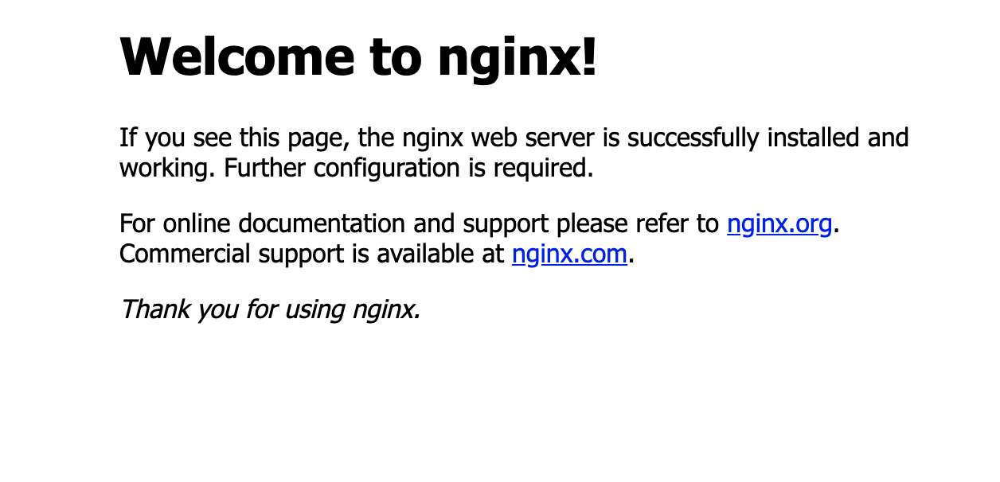

預備
Nginx官方的文件寫的蠻容易理解，我就直接照他的文件 Installing NGINX Open Source 來做。
我的環境為Ubnutu 18.04(“Bionic”)
安裝流程
1.
1 | sudo wget https://nginx.org/keys/nginx_signing.key |
2. 更改
我們要使用apt-get下載Nginx，直接在/etc/apt/sources.list新增打算安裝Nginx的版本跟位置。格式如下，<CODENAME>是Ubuntu版本的名稱。
1 | deb https://nginx.org/packages/mainline/debian/ <CODENAME> nginx |
列一下Ubuntu官網查到的版本名稱：
- Debian 9 (“Stretch”)
- Debian 10 (“Buster”)
- Ubuntu 16.04 LTS (“Xenial”) (i386, x86_64, ppc64le, - aarch64)
- Ubuntu 18.04 LTS (“Bionic”)
- Ubuntu 19.04 (“Disco”)
- Ubuntu 19.10 (“Eoan”)
用vim編輯檔案vim /etc/apt/sources.list
我們可以看到原先在檔案裡面的其它套件使用的ubuntu版本名稱是bionic，按照這個名稱加入Nginx的source到最下面。
1 | ## Uncomment the following two lines to add software from Canonical's |
根據指令移除可能存在的舊版本，安裝剛剛在source.list中指定的nginx版本
1 | $ sudo apt-get remove nginx-common |
安裝完後執行
1 | nginx |
檢查Nginx是否正確跑起來
- ps - 用
ps檢查一下nginx是否執行中
1 | ps aux | grep "nginx" |
- curl - 用
curl對localhost送出request
1 | curl -I 127.0.0.1 |
- 瀏覽器打開
localhost或是127.0.0.1

顯示畫面如上圖就是成功跑起Nginx了，Nginx會監聽 port 80。
Controlling NGINX
就是 Nginx的指令，可以關閉、重新載入設定檔等的指令。
1 | nginx -s <SIGNAL> |
- quit – Shut down gracefully
- reload – Reload the configuration file
- reopen – Reopen log files
- stop – Shut down immediately (fast shutdown)